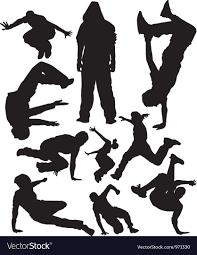
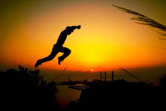

vamos al final de la pagina
El parkour es practicado tanto individual como colectivamente en cualquier entorno, no exclusivamente en espacios urbanos. Cada practicante decide hasta que punto involucrase en su entrenamiento y como enfocarlo. Su práctica implica la adaptación al entorno para superar los diferentes obstáculos presentes en un recorrido. Fue desarrollado en Francia, inicialmente por Raymond Belle y posteriormente por su hijo David Belle y su grupo de amigos, los auto-denominados Yamakasi durante el final de los años 80. La disciplina se popularizó alfinal de los años 90 y el principio de los 2000 gracias a películas, documentales y anuncios televisivos protagonizados por los Yamakasi. |
El precursor del parkour en Europa Occidental fue el oficial naval francés Georges Hébert, que antes de la Primera Guerra Mundial promovió una serie de habilidades atléticas basadas en las que observó de las tribus indígenas que conoció en Africa. Hébert anotó: "sus cuerpos eran espléndidos, flexibles, ágiles, hábiles, exactos y resistentes, sin más entrenador en la gimnasia que su vida en la naturaleza". Como oficial de la Armada Francesa, Hébert fue asignado a la aldea de St. Pierre en Martinica. En 1902 hubo una catastrófica erupción volcánica y Hebert heroicamente coordinó la evacuación y rescate de alrededor de setecientas personas. Esta experiencia tuvo un profundo efecto en él, y reforzó su creencia en que la habilidad atlética debe ser combinada con coraje y altruismo. El Parkour es una disciplina que surge en Lisses (un pueblito a las afueras de Paris) al rededor de los años 80. Al inicio, David Belle junto con Sebastién Foucan, Williams Belle, Chau Belle, Laurent Pimontesi, Yann Hnautra, entre otros, fueron inspirados por Raymond Belle (Padre de David, ex-militar vietnamita y bombero francés instruído con el Método Natural) para crear lo que en un principio se nombro "Art Du Déplacement" (Arte Del Desplazamiento). Estos chicos, formaron el grupo "Yamakasi" que significa "Cuerpo fuerte, espíritu fuerte, hombre fuerte" en una lengua africana (Lingala).
Tiempo después David Belle y Sebastién Foucan deciden tomar un camino juntos y se separan de Yamakasi para renombrar el ADD como "Parkour". Así pasaría un tiempo en dónde reclutarían nuevos practicantes, formarían un nuevo grupo y comenzarían a difundir más y más su disciplina hasta hacerla más conocida, es ahí cuando el mundo comenzó a poner los ojos en el Parkour. Después de eso, Sebastién Foucan decide separarse y seguir su propio camino para renombrar lo ya renombrado como "FreeRunning". El Freerunning se popularizó sobre todo en el Reino Unido gracias a que Discovery Channel produjo los documentales "Jump London" y "Jump Britain" protagonizados por Foucan. Con el paso del tiempo el ADD/Parkour/Freerunning se popularizó tanto que comenzaron a surgir grupos y prácticantes en distintos puntos al rededor del mundo. Los medios de comunicación invadieron las pantallas y los diarios con reportajes. Las empresas comenzaron a utlizarlo para presentaciones en vivo y comerciales para T.V. La disciplina comenzó a globalizarse y a hacerse parte de la cotidianeidad de la gente en algunos países de Europa. |
El lema del parkour es Être et durer, cuyo significado es “Ser y durar”. Tomado del lema del Método Natural, Être forte pour être utile, es decir “Ser fuerte para ser útil”. |
Desplazamiento Pasavallas: apoyando una mano en el obstáculo hay que evitarlo con un salto rápido, aunque también se hace con las dos manos. Si una vez que pasas la valla con las piernas apoyas la segunda mano, se convierte en el movimiento conocido como ‘ladrón’. Gato: otro movimiento clásico en el que se salta apoyando las dos manos en el obstáculo y pasando las piernas entre ellas. Rompemuñecas: es como el gato, pero pasando primero las piernas estiradas y luego apoyando las manos. Reverso: supone esquivar el obstáculo por encima de él dando un giro en el que el cuerpo acaba mirando en la dirección opuesta a la que se empezó. Se puede hacer con una o dos manos. Saltos Son uno de los elementos más difíciles y más peligrosos en parkour. Los más habituales son:

De precisión: en el que sin carrerilla –con uno, o ambos pies– se trata de saltar a un punto que sea
estrecho, como desde lo alto de un muro a otro. Si están a diferentes alturas se llama ‘distensión’.
Salto de brazo: el más habitual antes de trepar porque supone que tras el salto se coge la parte
alta de un obstáculo.
Salto de fondo: consiste en desplazarse hacia abajo a una amplia superficie. Si la altura o la
longitud saltada es considerable, es adecuado utilizar una rotación para aterrizar.
Aterrizajes o recepciones
Tras un salto, es necesario trabajar la caída para evitar lesiones, inmediatas o a medio-largo plazo,
a consecuencia de los impactos. Por ello, es bueno conocer las más habituales:
Recepción básica: evitando que los talones golpeen el suelo, para tener más amortiguación se debe
repartir el peso del impacto por el cuerpo, manteniendo las rodillas parcialmente flexionadas y
la espalda inclinada hacia delante.
Rotación: útil cuando la básica no se controla por la velocidad o la altura del salto. La posición es
similar, pero se tiene que voltear el cuerpo utilizando como punto de apoyo el omoplato.

Recepciones con los brazos: después del salto del brazo hay que utilizar las piernas para que sirvan de
freno y evitar el impacto contra el obstáculo; además, estando flexionadas ayudarán a iniciar la
escalada. Si se salta utilizando una “rama” (algo a lo que agarrarse por encima de la cabeza) se debe
dejar que el cuerpo se balancee.
Otros movimientos
El parkour va más allá de los saltos y las recepciones. Por eso, tiene que haber una categoría para
todos estos movimientos:
Grimpeo: escalada de terraplenes, muros, o árboles.
Tictac: utilizando elementos del propio entorno saltar obstáculos. Por ejemplo, con la ayuda de un
banco del parque se puede saltar la valla.
180: apoyándose en un objeto dar un giro de 180 grados donde se acaba colgado y sujeto por las manos.
El hecho de descolgarse se llama ‘liberado’, y existe la variante en la cual en la caída se hace otro
giro para situarse de cara al recorrido y ganar tiempo.
Laché: estando colgado de una “rama”, pasar a otra.
|